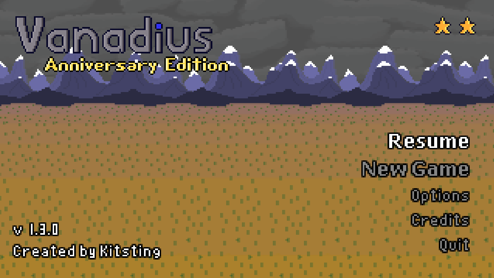
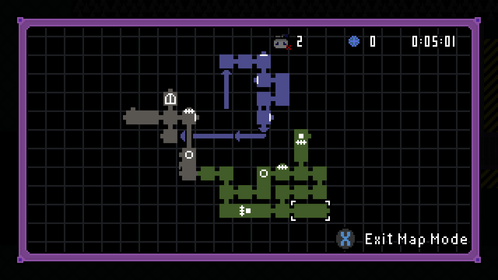

Vanadius: Anniversary Edition
Released: July 31, 2025
This is an improved port of Vanadius to the Godot engine! While I originally planned for it to be a simple port, I got a little carried away and ended up adding several new features. This involves completely reworking the options menu, adding proper controller support, and adding a ton of new rooms. I also took the opportunity to clean up a bunch of existing rooms with actual game design (wow!)
This was also my first (finished) game that I actually had people extensively playtest, so the game is very polished. This is definitely a practice I'll continue.
My goal with this port was to turn a 2 star game into a 3 star game, and I think I succeeded with that. Maybe it's even 3.5 stars! As a bonus, now I have source code I can actually edit, so if I ever want to make any more improvements, it'll be super easy.
I wanted to have the game be playable directly in the web browser, and while it is possible, the size of the file that Godot generates is wayy larger than I would prefer. I might revisit that idea another day. Still, I had the foresight to create native Linux builds, which I would like to do with all my games going forwards. No Mac builds, mainly because I don't own a Mac and don't want to push an untested version.
Game Download
Wanna play? You can get the game on itch.io for free!
Extras
The source code is available on Github, and works in the latest version of Godot 4.


